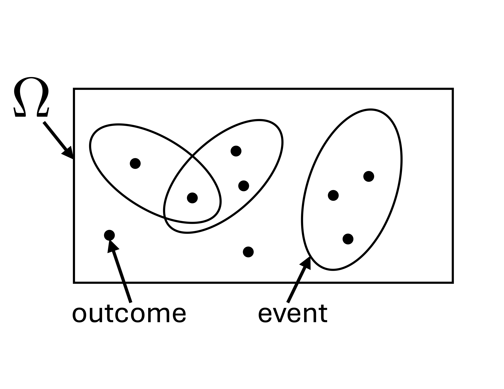
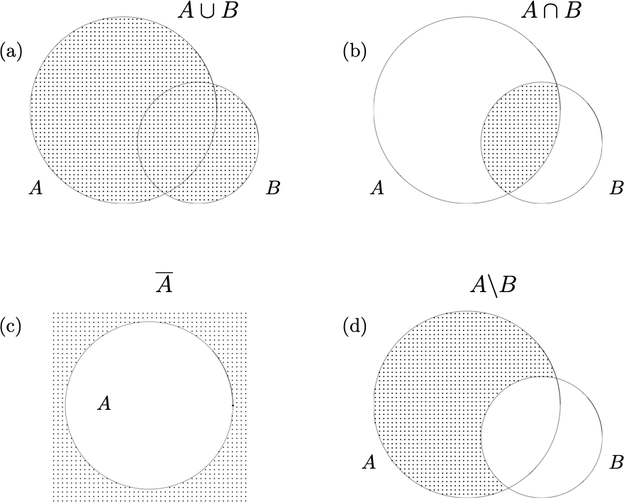
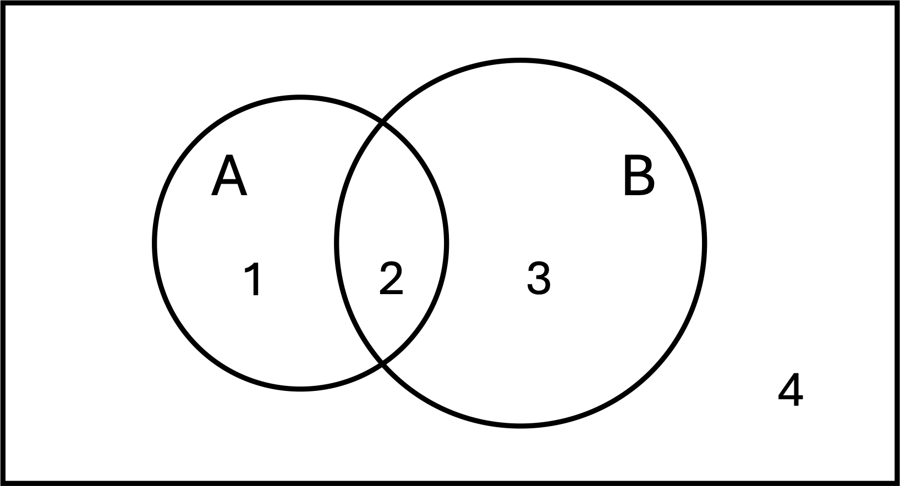
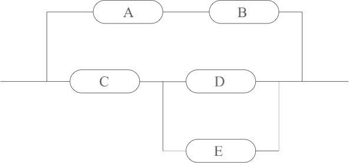
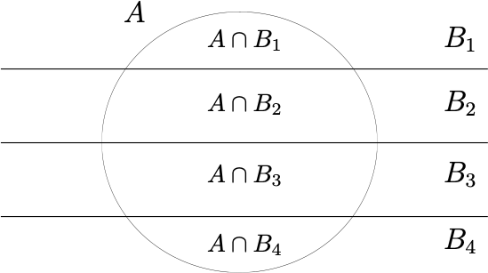

Xiaojing Ye
Department of Mathematics and Statistics
Georgia State University
Example.
By tossing a coin, we may get Head (H) or Tail (T).
By rolling a die, we may get 1, 2, 3, 4, 5, or 6.
By drawing a card from a deck, we may get any of these 52 cards:
| Suit | Value |
|---|---|
| \(\clubsuit\) | \(1, 2, \dots, 10, 11, 12, 13\) |
| \(\diamondsuit\) | \(1, 2, \dots, 10, 11, 12, 13\) |
| \(\spadesuit\) | \(1, 2, \dots, 10, 11, 12, 13\) |
| \(\heartsuit\) | \(1, 2, \dots, 10, 11, 12, 13\) |
Question: Can we forecast the number of Heads before tossing a coin for 100 times?
Answer: Typically not, even if we know the coin is fair.
But we can
These topics are studied in Probability and Statistics.
To check whether a coin is fair or not, our intuition is to conduct an experiment by tossing it many times:
| Experiment | Tossed number | Number of Heads |
|---|---|---|
| 1 | 1,000 | 450 |
| 2 | 5,000 | 2,566 |
| 3 | 20,000 | 9,988 |
| 4 | 50,000 | 25,098 |
It seems that the numbers of Heads and Tails are roughly equal in all 4 experiments. But can we claim the coin is fair, and how sure we are?
Probability is

For example:
Example. How many events can a finite sample space \(\Omega\) have?
Proposition. If a set \(\Omega\) is finite and has \(N\) elements, then \(\Omega\) has \(2^{N}\) possible subsets.
Proof. We label the elements in \(\Omega\) by 1, 2, \(\dots\), \(N\).
The first element can be included in a subset or excluded, so there are two possibilities.
The same for each of the rest elements. Hence the total number of possible subsets is \[ \underbrace{2 \times 2 \times \cdots \times 2}_{N} = 2^{N} . \]
Example. Let \(\Omega = \{1, 2, 3, 4\}\). List all subsets of \(\Omega\).
Solution. There are \(2^{4}=16\) possible subsets: \[ \begin{aligned} & \{1\}, \ \{1,2\}, \ \{1,3\}, \ \{1,4\}, \ \{1,2,3\}, \ \{1,2,4\},\ \{1,3,4\}, \ \{1,2,3,4\}, \\ & \{2\}, \ \{2,3\}, \ \{2,4\}, \ \{2,3,4\}, \\ & \{3\}, \ \{3,4\}, \\ & \{4\}, \\ & \emptyset . \end{aligned} \]
Let \(\Omega\) be a sample space and \(A, B \subseteq \Omega\) be two events.

Example. Let \(A=\{1, 2, 3\}\) and \(B=\{3, 4, 5, 6, 7\}\). Find \[ A \cup B, \quad A \cap B, \quad A \setminus B, \quad B \setminus A . \]
Solution. \[ \begin{aligned} A \cup B &= \{\underbrace{1,2}_{\text{in } A},\ \underbrace{3}_{\text{in both $A$ and $B$}}, \underbrace{4,5,6,7}_{\text{in } B}\}\\ A \cap B &= \{\underbrace{3}_{\text{in both $A$ and $B$}}\}\\ A \setminus B &= \{\underbrace{1, 2}_{\text{in $A$ but not $B$}}\}\\ B \setminus A &= \{\underbrace{4, 5, 6, 7}_{\text{in $B$ but not $A$}}\} \end{aligned} \]
Example. Let \(A=(0, 3]\) and \(B=[2, 5]\) be intervals in \(\mathbb{R}\). Find \[ A \cup B, \quad A \cap B, \quad A \setminus B, \quad B \setminus A . \]
Solution. \[ \begin{aligned} A \cup B &= (0, 5]\\ A \cap B &= [2, 3]\\ A \setminus B &= (0, 2)\\ B \setminus A &= (3, 5] \end{aligned} \]
Example. Roll a die once. Answer the following questions:
What is the sample space \(\Omega\)?
Consider events \(A = \{2,4,6\}\) and \(B = \{1,2,3\}\). Find \(A \cup B\), \(A \cap B\), \(A^{c}\), and \(B^{c}\).
Are \(A\) and \(B\) disjoint?
Are \(A\) and \(B\) exhaustive?
Solution.
\(\Omega = \{1,2,3,4,5,6\}\).
We see \[ \begin{aligned} A \cup B & = \{1,2,3,4,6\} \\ A \cap B & = \{2\} \\ A^{c} & = \{1,3,5\} \\ B^{c} & = \{4,5,6\} \end{aligned} \]
Since \(A\cap B=\{2\}\neq \emptyset\), we know \(A\) and \(B\) are not disjoint.
Since \(A\cup B=\{1, 2, 3, 4, 6\} \neq \Omega\), we know \(A\) and \(B\) are not exhaustive.
Example. Find the sample space \(\Omega\) and its size \(|\Omega|\) for the following experiments: 1. Toss a coin once. 2. Toss a coin twice and order doesn’t matter (same as tossing two indistinguishable coins simultaneously). 3. Toss a coin twice and order does matter (same as tossing two distinguishable coins simultaneously). 4. Roll a die until first 6 appears. 5. Roll a die 3 times and order matters.
Solution.
\(\Omega = \{\text{H, T}\}\) and \(|\Omega| = 3\).
\(\Omega = \{\text{HH, HT(=TH), TT}\}\) and \(|\Omega| = 3\).
\(\Omega = \{\text{HH, HT, TH, TT}\}\) and \(|\Omega| = 4\).
\(\Omega = \{6, ?6, ??6, \dots\}\) where \(?\) can be anything except 6 and \(|\Omega| = \infty\).
\(\Omega = \{(a,b,c): a,b,c \in \{1,2,3,4,5,6\}\}\) and \(|\Omega| = 6^{3}\).
\[ \begin{aligned} \left(A\cup B\right)^c &= A^c \cap B^c \\ \left(A\cap B\right)^c &= A^c \cup B^c \end{aligned} \] \[ \quad \] \[ \quad \] \[ \quad \]
Hint: we can draw a Venn diagram and label each partition:

\[ \begin{aligned} \left(A\cup B\right)^c &= A^c \cap B^c \\ \left(A\cap B\right)^c &= A^c \cup B^c \end{aligned} \]
Proof. We first denote \[ \begin{aligned} 1 = A \setminus B, \quad 2 = A \cap B, \quad 3 = B \setminus A, \quad 4 = (A \cup B)^{c}. \end{aligned} \] Then 1, 2, 3, and 4 are a disjoint partition of \(\Omega\). Now we can verify \[ \begin{aligned} A^{c} \cap B^{c} & = (1 \cup 2)^{c} \cap (2 \cup 3)^{c} \\ & = (3 \cup 4) \cap (1 \cup 4) \\ & = 4 \\ & = (A \cup B)^{c} \end{aligned} \] Similar, we can show \(\left(A\cap B\right)^c = A^c \cup B^c\).
Let \(\{E_{i}: i \in I\}\) be sets, then \[ \begin{aligned} \bigg(\bigcup_{i\in I} E_i \bigg)^c = \bigcap_{i\in I} E_i^c, \qquad \bigg(\bigcap_{i\in I} E_i \bigg)^c = \bigcup_{i\in I} E_i^c \end{aligned} \]
Proof. We can prove this by logic: \[ \begin{aligned} x \in \bigg(\bigcup_{i\in I} E_i \bigg)^c & \quad \Longleftrightarrow \quad x \notin \bigcup_{i\in I} E_i \\ & \quad \Longleftrightarrow \quad x \notin E_i, \quad \forall \, i \in I \\ & \quad \Longleftrightarrow \quad x \in E_i^{c}, \quad \forall \, i \in I \\ & \quad \Longleftrightarrow \quad x \in \bigcap_{i\in I} E_i \end{aligned} \]
Definition. A collection \(\mathcal{M}\) of subsets of \(\Omega\) is a called a \(\sigma\)-algebra of \(\Omega\) if - \(\emptyset \in \mathcal{M}\). - If \(E\in \mathcal{M}\), then \(E^c\in \mathcal{M}\). - For any countable collection of subsets \(E_1, E_2, \cdots \in \mathcal{M}\), there is \[ \bigcup_{i=1}^{\infty} E_{i} \in \mathcal{M} . \]
\(\mathcal{M} = \{\Omega, \emptyset\}\)
\(\mathcal{M} = \{ \text{any~}E \subseteq \Omega\}\). Note if \(\Omega\) is finite and has \(N\) elements, then \(|\mathcal{M}| = 2^{N}\).
Definition. We call \(P: \mathcal{M} \to [0,1]\) a probability defined on \((\Omega, \mathcal{M})\) if:
Examples - \(P(\emptyset) = 0\). - \(P(A^{c}) = 1 - P(A)\) for any \(A \subseteq \Omega\). - If \(A \cap B = \emptyset\), then \(P(A \cup B) = P(A) + P(B)\).
Example. Suppose \[ \Omega = \{1, 2, 3, 4, 5\},\quad E_1=\{1, 2\},\quad E_2=\{3, 4, 5\} . \] Define \[ \mathcal{M}=\{\Omega, \emptyset, E_1, E_2\}\] and \(P: \mathcal{M} \to [0, 1]\) by \[ P(\Omega)=1,\quad P(\emptyset)=0, \quad P(E_1)=0.2, \quad P(E_2)=0.8 . \] Then - \(\mathcal{M}\) is a \(\sigma\)-algebra of \(\Omega\). - \(P\) is a probability.
Let \(\Omega\) be a sample space and \(\mathcal{M}\) its \(\sigma\)-algebra. Let \(P\) be a probability on \((\Omega, \mathcal{M})\).
Example. If \(\Omega\) is countable, then for any \(E=\{o_{i}: i \in \mathbb{N}\}\) there is \[ P(E) = \sum_{i=1}^{\infty} P(o_{i}) . \] This holds true if \(E\) is finite (and there is a finite sum on the right).
Let \(\Omega\) be a sample space and \(\mathcal{M}\) its \(\sigma\)-algebra. Let \(P\) be a probability on \((\Omega, \mathcal{M})\).
Proposition. If \(A, B \in \mathcal{M}\), then \[ P(A \cup B) = P(A) + P(B) - P(A \cup B). \]
Proof. \[ \begin{aligned} P(A \cup B) & = P\bigl( A \cup (B \setminus A) \bigr) \\ & = P(A) + P(B \setminus A) \\ & = P(A) + P(B) - P(A \cap B) \end{aligned} \]
Remark. We can extend this to the case with three sets \(A\), \(B\), and \(C\): \[ \begin{aligned} P(A\cup B\cup C) & = P(A) + P(B) + P(C) \\ & \quad - P(A\cap B) - P(B\cap C) - P(A \cap C) \\ & \quad+ P(A \cap B \cap C) . \end{aligned} \] This can be verified by Venn diagram.
Example. Suppose a job sent to a printer appears first in line with probability 65%, and second in line with probability 20%. Find the probability it appears either first or second in line.
Solution. Let \(A\) be the event that the job is the first. Then \(P(A)=0.65\).
Let \(B\) be the event that the job is the second. Then \(P(B)=0.2\).
Then we have \[ \begin{aligned} P(A\cup B) & = P(A) + P(B) - P(A\cap B) \\ & = P(A) + P(B) \\ & = 0.65+0.2 \\ & = 0.85 . \end{aligned} \] Note \(P(A \cap B) = 0\) since \(A \cap B = \emptyset\) (\(A\) and \(B\) cannot happen at the same time).
Example. During some construction, there is a probability 0.8 of experiencing blackouts on Monday and 0.5 on Tuesday. 1. Are blackouts on Mondays and Tuesday mutually exclusive? 2. Suppose there is a probability 0.35 of experiencing blackouts on both Monday and Tuesday, find the probability of having a blackout on Monday or Tuesday.
Solution. Let \(A\) be the event that the job is the first. Then \(P(A)=0.8\). Let \(B\) be the event that the job is the second. Then \(P(B)=0.5\).
Example. If a system is protected against a new computer virus with probability 0.85, find the probability that this system is vulnerable to the virus.
Solution. Let \(A\) be the event that the system is protected, i.e., \(P(A) = 0.85\). Then \(A^{c}\) is the event that it is not protected, and \[ \begin{aligned} P(A^{c}) = 1 - P(A) = 1 - 0.85 = 0.15. \end{aligned} \]
Rule of thumb: If \(\Omega\) is finite and all outcomes have equal probability, then we can compute the probability by counting.
Example. Tossing a fair coin: \(\Omega = \{\text{H, T}\}\), \(|\Omega| =2\), and \[ P(\text{T})=P(\text{H}) = \frac{1}{|\Omega|} = \frac{1}{2} . \]
Example. Rolling a fair die: \(\Omega = \{1, 2, 3, 4, 5, 6\}\), \(|\Omega| =6\), and \(o_i\) means the number \(i\) is rolled. Then \[ P(o_i)=\frac{1}{|\Omega|} = \frac{1}{6}, \quad \text{for}\quad i=1,\cdots, 6. \]
We can extend the method of counting to events.
If \(\Omega\) is finite and all outcomes have the same probability, then for any event \(E\subseteq \Omega\) there is \[ P(E) = \frac{\text{number of outcomes in } E}{\text{number of outcomes in } \Omega} = \frac{|E|}{|\Omega|} . \]
Remark. We can further extend this to infinite sample space \(\Omega\). \[ P(E) = \frac{\text{``size'' of } E}{\text{``size'' of } \Omega} . \] We will discuss this in the rigorous form using probability density functions later in the class.
Example. Roll three indistinguishable dice all at once. Let \(E=\{\text{sum of numbers } \leq 4\}\). Find \(P(E)\).
Solution. The sample space is \[ \Omega = \{(a, b, c): a,b,c=\{1,2,\cdots, 6\} \} . \] Hence \(|\Omega| = 6\times 6\times 6 = 6^3\).
Notice that \[ E=\{(1,1,1), (1,1,2), (1,2,1), (2,1,1)\} . \] Hence \(|E| = 4\).
As all outcomes have equal probability, we know \[ P(E) = \frac{|E|}{|\Omega|} = \frac{4}{6^3}=\frac{1}{54} . \]
Example. Roll a fair die once. Let \[ A=\{\text{the rolled number is } \leq 4\}, \quad B=\{\text{the rolled number is } > 2\} \] Find \(P(A), \quad P(B), \quad P(A\cup B), \quad P(A\cap B) .\)
Solution. Notice that \(\Omega=\{1,2,\cdots, 6\}\) and \(|\Omega| = 6\). There are also \[ \begin{aligned} A & = \{1, 2, 3, 4\}, \quad& |A| = 4 \\ B & = \{3,4,5,6\}, \quad &|B| = 4 \\ A \cup B &= \{1,2,3,4,5,6\} , \quad &|A\cup B| = 6 \\ A \cap B &= \{3,4\}, & |A \cap B| =2 \end{aligned} \] Hence \[ \begin{aligned} P(A) = \frac{|A|}{|\Omega|} = \frac{4}{6}, \quad P(B) = \frac{4}{6}, \quad P(A\cup B) = \frac{6}{6}, \quad P(A\cap B) = \frac{2}{6} . \end{aligned} \]
Example. Roll a fair die once. Let \[A = \{1,2\}, \quad B = \{4,5,6\}, \quad C = \{2,4,6\}.\] Find \[ P(A), \quad P(B), \quad P(C), \quad P(A\cap B), \quad P(A\cap C) . \]
Solution. Notice that \(\Omega=\{1,2,\cdots, 6\}\) and \(|\Omega| = 6\). There are also \[ \begin{aligned} A \cap B &= \emptyset, \quad &|A\cap B| = 0 \\ A \cap C &= \{2\}, & |A \cap C| = 1 \end{aligned} \] Hence \[ \begin{aligned} P(A) = \frac{2}{6}, \quad P(B) = \frac{3}{6}, \quad P(C) = \frac{3}{6}, \quad P(A\cap B) = \frac{0}{6}, \quad P(A\cap C) = \frac{1}{6} . \end{aligned} \]
We call two events \(A\) and \(B\) independent if \(P(A\cap B) = P(A) P(B)\).
Continuing the previous example, we have \[ \begin{aligned} P(A \cap B)& = 0 \ne \frac{1}{6} = P(A)P(B) \\ P(A \cap C)& = \frac{1}{6} \ne \frac{1}{4} = P(A)P(C), \end{aligned} \] and hence \(A\) is not independent of \(B\) nor \(C\).
Warning. If \(0<P(A)<1\), then \(A\) and \(A^{c}\) are not independent: \[ P(A \cap A^{c}) = P(\emptyset ) = 0 \ne P(A)\bigl( 1 - P(A) \bigr) = P(A) P(A^{c}). \]
Proposition. If \(A\) and \(B\) are independent, then \(A^{c}\) and \(B^{c}\) are independent.
Proof. We have \[ \begin{aligned} P(A^{c} \cap B^{c}) & = P\bigl( (A \cup B)^{c} \bigr)\\ & = 1 - P( A \cup B) \\ & = 1 - P( A) - P( B) + P(A \cap B) \\ & = 1 - P( A) - P( B) + P(A) P(B) \\ & = (1 - P( A))(1 - P( B)) \\ & = P(A^{c}) P(B^{c}) . \end{aligned} \]
Indeed, we can show that these are equivalent:
Lemma. If \(A\) and \(B\) are independent, then \[ P(A\cup B) = 1-(1-P(A))(1-P(B)) . \]
Proof. \[ \begin{aligned} P(A\cup B) &= 1-P((A\cup B)^c) \\ & =1-P(A^c\cap B^c)\\ & =1-P(A^c)P(B^c) \\ &= 1-(1-P(A))(1-P(B)) . \end{aligned} \]
Remark. This lemma can also be proved by \[ P\bigl( A \cup B \bigr) = P(A) + P(B) - P(A \cap B) = P(A) + P(B) - P(A)P(B) . \]
We call events \(\{E_{i}: i \in I\}\) independent if for any \(n \in \mathbb{N}\) and any finite selection of events \(E_{i_{1}}, \dots, E_{i_{n}}\), there is \[ P\Bigl( \bigcap_{j = 1}^{n} E_{i_{j}} \Bigr) = \prod_{j=1}^{n} P(E_{i_{j}}). \]
Warning. This definition is strong. It is not just pairwise independent.
Important fact. If \(A\) is independent of \(B\) and \(C\) (no matter whether \(B\) and \(C\) are independent or not), then \(A\) is independent of any set operation applied to \(B\) and \(C\).
Example. Let \(\Omega = [0, 10]\) and randomly choose a number (with equal probability). What is the probability of choosing a number in \((5, 7)\)?
Solution. Since we choose the number with equal probability, there is \[ P(E) = \frac{|E|}{|\Omega|} = \frac{\text{length of } E}{\text{length of } \Omega} = \frac{7-5}{10-0}=\frac{1}{5} \] We shall make this more rigorously in continuous probability distributions later in the class.
Example. We use disks A and B to back up data in parallel. Disk A can crash with probability 0.01, whereas Disk B can crash with probability 0.02 independently. Find probability that we can successfully back up the data.
Solution. Let \(X\) be the event that the data in Disk A is saved and \(Y\) the data in Disk B is saved. Hence \(P(X^{c}) = 0.01\) and \(P(Y) = 0.02\).
Then \(X \cup Y\) is the event that the data is saved.
Now we have \[ \begin{aligned} P(X \cup Y) & = 1 - P\bigl( (X \cup Y)^{c} \bigr) \\ & = 1 - P\bigl( X^{c} \cap Y^{c} \bigr) \\ & = 1 - P(X^{c}) P(Y^{c}) \\ & = 1 - 0.01 \cdot 0.02 \\ & = 0.9998 . \end{aligned} \]
Example. A wireless signal from the router to the basement has to go through 2 wifi amplifiers in sequence. Amplifier A can crash with probability 0.01, while amplifier B 0.02 independently. Find probability that we can have signal in the basement.
Solution. Let \(X\) be the event that the amplifier A works and \(Y\) the amplifier B works. Then \(P(X^{c}) = 0.01\) and \(P(Y^{c}) = 0.02\).
Since A and B are set in sequence, the event of having signal in the basement is \(X \cap Y\), and \[ \begin{aligned} P(X \cap Y) & = P(X) P(Y) \\ & = (1 - P(X^{c})) (1 - P(Y^{c})) \\ & = (1-0.01)\cdot(1-0.02) \\ & = 0.9702 . \end{aligned} \]
Example. Consider the circuit system in the picture below. Suppose the independent success rates of the device components are A: 99%; B: 97%; C: 95%; D: 96%; E: 98%. Find the reliability of this system.

Example. Consider the circuit system in the picture below. Suppose the independent success rates of the device components are A: 99%; B: 97%; C: 95%; D: 96%; E: 98%. Find the reliability of this system.
Solution. The event that the system works is \(Z:=(A \cap B) \cup \bigl( C \cap (D \cup E) \bigr)\).
Hence \[ \begin{aligned} P(Z) & =P\Bigl( (\underbrace{A \cap B}_{=:X}) \cup (\underbrace{C \cap (D\cup E)}_{=:Y}) \Bigr) \\ & = 1-(1-P(X))(1-P(Y))\\ & = 1-(1-P(A)P(B))\left[1-P(C)P(D\cup E)\right]\\ &= 1-(1-P(A)P(B))\left[1-P(C) \left[1-(1-P(D))(1-P(E))\right] \right]\\ &=1-(1-0.99\times 0.97)\left[1-0.95 \left[1-(1-0.96)(1-0.98)\right] \right] \\ &= 0.9980 . \end{aligned} \]
Permutations and Combinations are two common ways to count the number of selecting \(k\) from a pool of \(n\) objects (\(0 \le k \le n\)).
Are the objects distinguishable or indistinguishable
Does the order matter?
Is it
with replacement: the selected object is refilled in the pool after each selection, and we always have a pool of \(n\) objects.
without replacement: an item is removed from the pool once selected, so we have one fewer item to choose from the pool after each selection.
Example. Create an 8 letter password with 10 digits, 26 uppercase and 26 lowercase letters. Find different number of ways to create the password.
Solution. There are 62 distinguishable letters in total, consisting of 10 digits, 26 uppercase letters, and 26 lowercase letters.
The order matters in a password. The same letter can be used again and hence the selection is with replacement.
Therefore, we have \[\underbrace{62\times 62\times\cdots\times 62}_{8} = 62^8\] different ways to create such a password.
Example. Picking a team of 3 from 5 persons.
Solution. There are 5 distinguishable persons.
The order does not matter. A person can only be chosen once and hence the selection is without replacement.
We label the five persons by 1, 2, 3, 4, 5. Then there are 10 possible ways to form this team of five: \[ \begin{aligned} 123,\ 124,\ 125,\ 134,\ 135, \\ 145,\ 234,\ 235,\ 245,\ 345. \end{aligned} \]
Definition. Selecting \(k\) from \(n\) distinguishable objects in order is called permutation.
Permutation with replacement \[ P_r(n, k) = \underbrace{n\cdot n\cdot \ldots \cdot n }_{k\text{ terms}}= n^k . \]
Permutation without replacement \[ \begin{aligned} P(n, k) &= \underbrace{n\cdot (n-1)\cdot \ldots \cdot (n-k+1) }_{k\text{ terms}} \\ &=\frac{n\cdot (n-1)\cdot \ldots \cdot (n-k+1)\cdot\left( (n-k)\cdot(n-k-1)\cdot\ldots \cdot 2\cdot 1\right)}{\left( (n-k)\cdot(n-k-1)\cdot\ldots \cdot 2\cdot 1\right)} \\ &= \frac{n!}{(n-k)!} \end{aligned} \]
Example. How many ways to create an 8-letter password with 10 digits, 26 uppercase and 26 lowercase letters?
Solution. As we have seen before, it is permutation of selecting \(k=8\) from \(n=62\) with replacement and hence the number is \[ P_{r}(62,8) = 62^{8} = 218,340,105,584,896 \approx 2.18 \times 10^{14} . \]
Example. In how many ways can 3 students be seated in a row of 5 labeled chairs?
Solution. Students are distinguishable, and each student needs a separate seat. Thus, the number of possible allocations is the number of permutations without replacement: \[ P(5,3) = \frac{5!}{(5-3)!} = 60. \] Notice that the order matters (different from the example of choosing a team of 3 from 5 persons earlier).
Selecting \(k\) from \(n\) distinguishable objects where order doesn’t matter is a combination.
Combination without replacement \[ C(n,k) = \binom{n}{k} := \frac{P(n,k)}{k!} = \frac{n!}{(n-k)! k!} \] To see this, we proceed - Temporarily assume the order matters, then there are \(P(n,k)\) permutations of selected \(k\) in order from \(n\) distinguishable objects. - Notice for the same \(k\) objects selected, we counted it for \(k!\) times as we assumed the order matters. - Divide \(P(n,k)\) by \(k!\) to eliminate the repetitions because order doesn’t matter.
Remarks.
Now there are again \(n\) distinguishable objects and we can choose one each time for \(k\) times. Every time we choose one, the chosen one will be refilled, and we can choose one from the \(n\) objects again. The order of our choices doesn’t matter.
Combination with replacement \[C_r(n, k) = \binom{n+k-1}{k} = \frac{(n+k-1)!}{(n-1)!\ k!}\]
Why the formula of \(C_r(n,k)\)? This is the same as placing \(k\) identical balls (order doesn’t matter) in a row of \(n\) drawers (objects). These drawers are aligned in a row with \(n-1\) dividers.
For instance, placing 3 of \(k\) balls in the 4th drawer means selecting the 4th object in 3 of \(k\) times.
So we just need to find the number of ways to align the \(k\) balls and \(n-1\) dividers in a row.
This is equivalent to having \(n-1+k\) slots first, then choosing \(k\) slots for the balls and the remaining \(n-1\) slots for the dividers. Hence \(C_r(n,k) = \binom{n+k-1}{k}\).
The picture below shows \(C_{r}(10,6)\): \(k=6\) balls (circles) and \(n-1=9\) dividers (bars)
Example. An antivirus software reports that 3 folders out of 10 are infected. How many possible cases are there?
Solution. The 10 folders are distinguishable. This is choosing \(3\) from \(10\) without replacement and the order doesn’t matter. Hence the total number of possible cases is \[ C(10,3) = \binom{10}{3} = \frac{10!}{(10-3)! \ 3!} = \frac{10\cdot 9\cdot 8}{7! \ 3!} . \]
Example. There are 20 monitors in a store. Among them, 15 are manufactured by factory A and 5 are by factory B. But they have identical packages. A lab wants to buy 6 monitors. Find the probability that among the randomly chosen monitors, 2 are manufactured by factory B.
Solution. To choose 6 monitors randomly from 20, there are \(C(20,6)\) possibilities.
To have 2 monitors manufactured by factory B, there are \(C(5,2)\) possibilities. This also means choosing 4 manufactured by A, which has \(C(15,4)\) possibilities.
Therefore, the probability of getting 2 from B when randomly choosing 6 among the 20 monitors in stock is \[ \frac{C(5,2)C(15,4)}{C(20,6)} = 0.3522. \]
Example. Find the number of ways to host 3 persons in 7 hotels.
Solution. Notice that a hotel can host more than one person, and the hotel selection order doesn’t matter. So it is choosing from \(n=7\) hotels for \(k=3\) times with replacement. The total number is \[ C_{r}(7, 3) = \binom{7+3-1}{3} = \frac{9!}{(9-3)! 3!} = \frac{9\cdot 8\cdot 7}{3\cdot 2}=84 . \]
| with replacement | without replacement | |
|---|---|---|
| Permutation (order matters) | \(P_r(n, k)=n^k\) | \(P(n, k) = \frac{n!}{(n-k)!}\) |
| Combination (order doesn’t matter) | \(C_r(n, k)=\frac{(k+n-1)!}{(n-1)!\, k!}\) | \(C(n, k) = \frac{n!}{(n-k)!\, k!}\) |
Definition. Conditional probability of event \(A\) given event \(B\) is the probability that \(A\) occurs when \(B\) is known to occur, which is defined by \[ P(A \,\vert\, B) = \frac{P(A \cap B)}{P(B)} . \] The reason is \[ P(A\,\vert\, B) = \frac{|A\cap B|}{|B|} = \frac{\frac{|A\cap B|}{|\Omega|}}{\frac{|B|}{|\Omega|}} = \frac{P(A\cap B)}{P(B)} . \] We often use an equivalent form \[ P(A\cap B) = P(A\,\vert\, B) P(B) . \]
Remark. Be aware of the following two rules and their difference: - \(P(A \,\vert\, B) + P( A^c \,\vert\, B) = 1\). - \(P(A\cap B) + P(A^c \cap B) = P(B)\)
Remark. Recall that if \(A\) and \(B\) are independent, then \(P(A\cap B) = P(A) P(B)\) and thus \[ P(A \,\vert\, B) = P(A) \quad \text{and} \quad P(B \,\vert\, A) = P(B) \] This means that the occurrence of \(A\) does not affect the probability of \(B\) occurring, and vice versa.
Any one below can be used as the definition of \(A\) and \(B\) being independent: \[ \begin{align*} P(A \cap B) & = P(A) P(B) \\ P(A \,\vert\, B) & = P(A) \\ P(B \,\vert\, A) & = P(B) \end{align*} \]
Example. If a flight has 90% probability depart on time, 80% probability arrive on time, and 75% probability depart on time and arrive on time. Find probability of 1. arriving on time given departing on time; 2. departing on time given arriving on time; 3. are departing on time and arriving on time independent?
Solution. Let \(A\) be the event that the fight arrives on time, and \(D\) the event that it departs on time. Then \(P(A) = 0.8\), \(P(D)=0.9,\) and \(P(A\cap D)=0.75.\) Therefore,
Theorem (Bayes’ rule). Let \(A\) and \(B\) be two events, then \[ P(B \,\vert\, A) = \frac{P(B) P(A\,\vert\, B)}{P(A)} \]
Proof. This is directly from \[ P(A \cap B) = P(A \,\vert\, B) P(B) = P(B \,\vert\, A) P(A) . \]
Theorem. If \(B_{1},\dots,B_{k}\) are a disjoint partition of \(\Omega\), then for any event \(A\) there is \[ P(A) = \sum_{i=1}^k P(A\cap B_i) . \]
Proof. Notice that \[ \begin{aligned} A = \underbrace{(A\cap B_1) \cup (A\cap B_2) \cup \cdots \cup (A\cap B_k)}_{\text{union of $k$ mutually exclusive sets}} \end{aligned} \]

Combining Law of total probability with Bayes’ rule:
\[ P(B_i \,\vert\, A) = \frac{P(B_i) P(A\,\vert\, B_i)}{P(A)} =\frac{P(B_i) P(A\,\vert\, B_i)}{\sum\limits_{i=1}^k P(A\cap B_i)} = \frac{P(B_i) P(A\,\vert\, B_i)}{\sum\limits_{i=1}^k P(B_i)P(A\,\vert\, B_i)} \]
Remark.
An important special case when \(k=2\), \(B_{1}=B\), \(B_{2}=B^{c}\): \[ P(B \,\vert\, A) = \frac{P(B) P(A\,\vert\, B)}{P(B)P(A\,\vert\, B)+P(B^c)P(A\,\vert\, B^c)} \]
Example. Suppose that 4% of all the patients are infected with the virus. A test is 99% reliable on the healthy population. A test is 95% reliable on the infected population. Find the conditional probability that a patient has the virus given the test shows positive results.
Solution. Let \(V\) be the event that the person has virus, and \(S\) the event that the person is tested positive. Then \(P(V)=0.04\), \(P(S \,\vert\, V)=0.95\), \(P(S^c \,\vert\, V^c)=0.99\).
The probability that the person has the virus given that he is tested positive is \[ \begin{split} P(V\,\vert\, S) &= \frac{P(V\cap S)}{P(S)} = \frac{P(V) P(S\,\vert\, V)}{P(V) P(S\,\vert\, V) +P(V^c) P(S\,\vert\, V^c)}\\ &=\frac{P(V) P(S\,\vert\, V)}{P(V) P(S\,\vert\, V) +(1-P(V)) (1- P(S^c\,\vert\, V^c))}\\ &=\frac{0.04\cdot 0.95}{0.04\cdot 0.95 +(1-0.04) (1- 0.99)}=0.9979 \end{split} \] where we used the fact \(P(A^c\,\vert\, B) = 1- P(A\,\vert\, B)\) for any events \(A\) and \(B\).